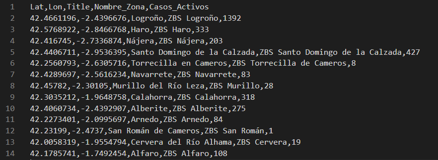
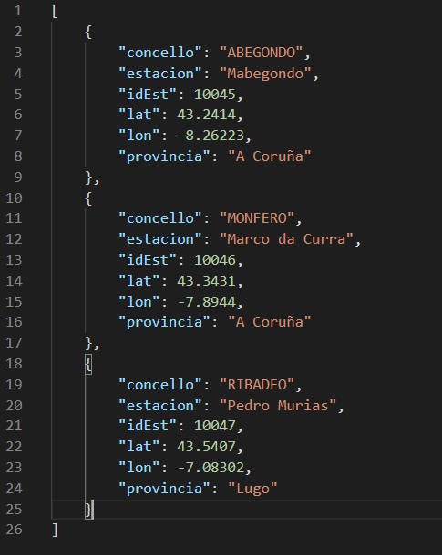

Los archivos deben tener una estructura concreta para poder ser leídos por la web app.
En primer lugar, deben tener los datos de latitud y longitud en dos columnas separadas.
Para que la web app localize de manera automática las coordenadas,
el nombre de los campos de las coordenadas deben ser los siguientes:
(también serían
válidos en mayúsculas o con mayúsculas y minúsculas mezcladas)
Nombres para el campo de la latitud:
Nombres para el campo de la longitud:
Si los nombres no corresponden con ninguno de la lista, cuando subas el archivo, la web app te pedirá
que indicaques
manualmente cúales son los campos en los que se encuentran las coordenas.
El único requisito para poder utilizar un archivo CSV es que el archivo cuente con cabecera.
Ejemplo de un sencillo pero válido archivo CSV:
Como se puede ver, la línea número uno es la cabecera, que da nombre a los valores de las
líneas siguientes.
Además, como los campos de las coordenas cumplen con los nombres mencionados anteriormente (Lat y Lon),
la web app
será capaz de encontrar las coordenas de manera automática.
El único requisito para poder utilizar un archivo JSON es que los ítems a representar no estén anidados.
Ejemplo de un sencillo pero válido archivo JSON:
Como se puede ver, cada ítem está limitado por llaves ( { ... } ) y está separado por comas ( {...} ,
{...})
del anterior y del siguiente item.
Además, como los campos de las coordenas cumplen con los nombres mencionados anteriormente (lat y lon),
la web app
será capaz de encontrar las coordenas de manera automática.
En la siguiente sección hay varios archivos de datos que se pueden utilizar para probar la aplicación y
ver su estructura.
Además, cada archivo tienen un enlace para descargar el archivo y otro para acudiar al portal de datos
abiertos del que se ha extraído.
Fuente de los datos: Ayuntamiento de Alicante